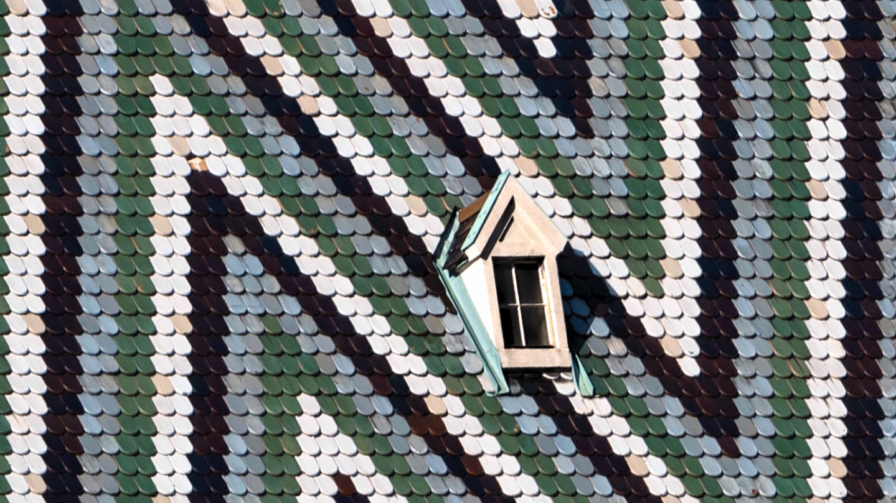

Mönster på Stefansdomen!
Den magnifika Stefansdomen i Wien är inte bara känd för sin arkitektur utan även för sitt unika takmönster.
Taket är täckt av över 230 000 glaserade takpannor som bildar färgstarka geometriska mönster och symboler,
inklusive det österrikiska örnemblemet. Detta konstverk
är en hyllning till både gotisk design och nationell stolthet och lockar besökare från hela världen.